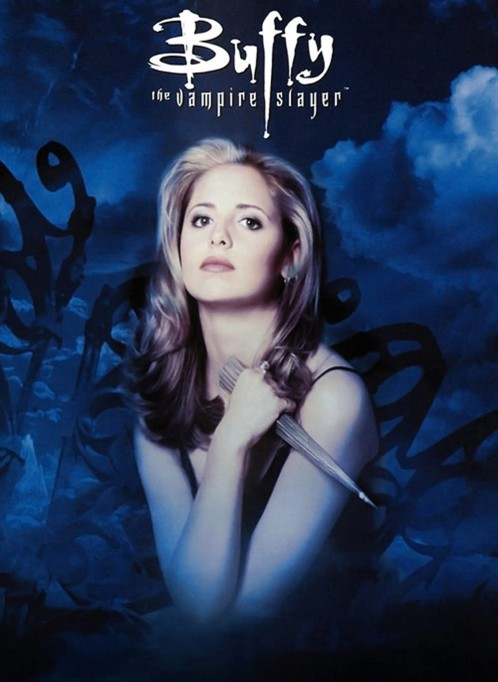

About Me

I am Jared Struminsky. I am a senior at the University of Rhode Island going for my B.S. in Mathematics. Prior to deciding to major in mathematics, I was majoring in Physics. I completed enough of the physics curriculum to meet the requirements for a minor in the subject. My interestings include camping, hiking, and playing (video or board) games. My favorite books are Tolkien's Lord of the Rings trilogy and my favorite show is Buffy the Vampire Slayer.